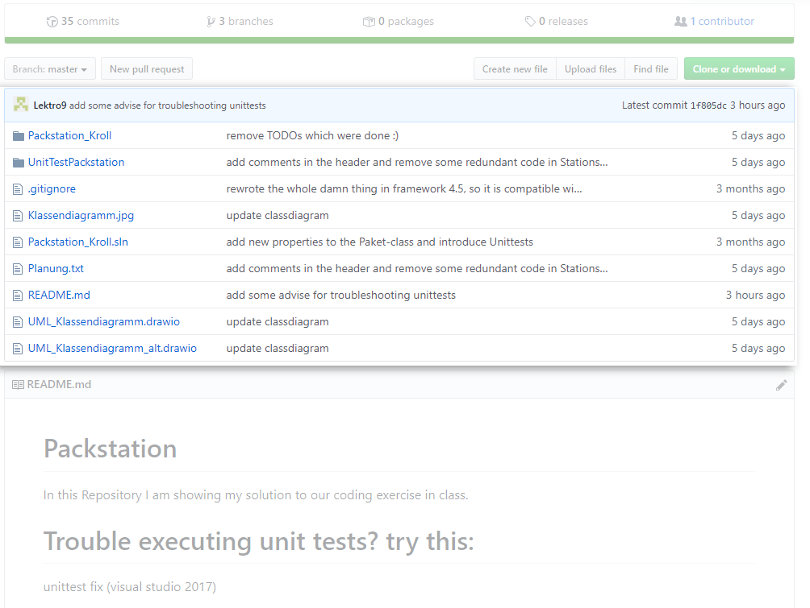
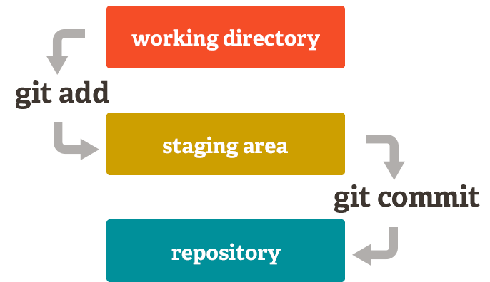

GIT
präsentiert von Lars Kroll
Inhalt
- Was ist Git?
- Warum Git nutzen?
- Begrifflichkeiten
- Wichtigste Kommandos
- Installation
- Ein Repo erstellen
- Git Advanced
- Fragen/Quellen
Was ist Git?
Warum Git/Github?
- Teamwork
- Cloudspeicherung (Github)
- Feedback/starke Community
- zum Angeben!
- man brauch es sowieso irgendwann...
Begrifflichkeiten
Repositories ("Repos")

Repositories ("Repos")
Repositories ("Repos")
Repositories ("Repos")
Repositories ("Repos")
Commits

Commits

Commits
Commits
Branches
Wichtigste Kommandos
- git init
- git add
- git status
- git commit
- git push
- git pull
- git clone
Installation
-
Linux (Debian)
- apt-get install git
-
Linux (Fedora)
- yum install git
-
Mac/Windows
- git-scm.com
Ein Repo erstellen
Git Advanced
$ git config
$ git checkout
$ git stash
$ git rebase
$ git merge
$ git reset
$ git revert
$ git cherry-pick
$ git log